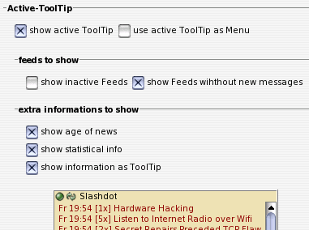

IV. Einzelübersicht über die Optionen

IV.VIII. Active-ToolTip (Options)
Active-ToolTip
Dieser Bereich ermöglicht einzustellen, ob der Active-ToolTip angezeigt werden soll. Wenn ja, kann entscheiden werden, ob dies als Ersatz des Icon-ToolTips (default) oder als Ersatz des Menus, welches bei Rechtsklick über dem Ticker-Icon erscheint, geschehen soll.feeds to show
Im Active-ToolTip wird beim Einblenden immer derjenige News-Feed gezeigt, aus welchem die aktuell im Ticker angezeigte Nachricht stammt. Hier kann nun eingestelt werden, welche News-Quellen beim Blättern mit den Buttons des Active-ToolTip angezeigt werden.extra informations to show
Ebenso wie beim Übersichtsfenter erlaubt dieser Bereich, zusätzliche Informationen zur Anzeige im Active-ToolTip zu bringen. Zum einen können die Zeitstempel (Abholzeit und, wenn vorhanden, der dc:date Zeitstempel der Erstellung der Nachricht) angezeigt werden ('show age iof news'). Ist der Schalter 'show statistical info' aktiviert, wird angezeigt, wie of die Nachricht bereits im Ticker gezeigt wurde.Ist der folgenden Schalter 'show information as ToolTip' deaktiviert, werden diese Informationen vor den eigentlichen Nachrichten-Titel geschrieben. Sollen diese Informationen hingegen als weiterer, 'klassischer' ToolTip angezeigt werden, wird in diesem 'klassischen' ToolTip, wenn vorhanden, zusätzlich eine weitergehende Erläuterung der Nachricht angezeigt.